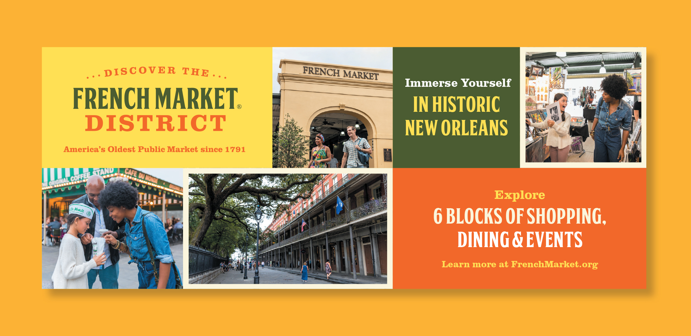
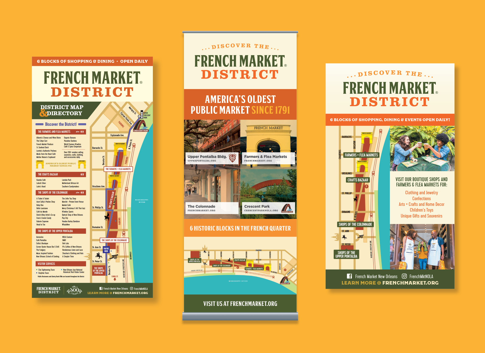
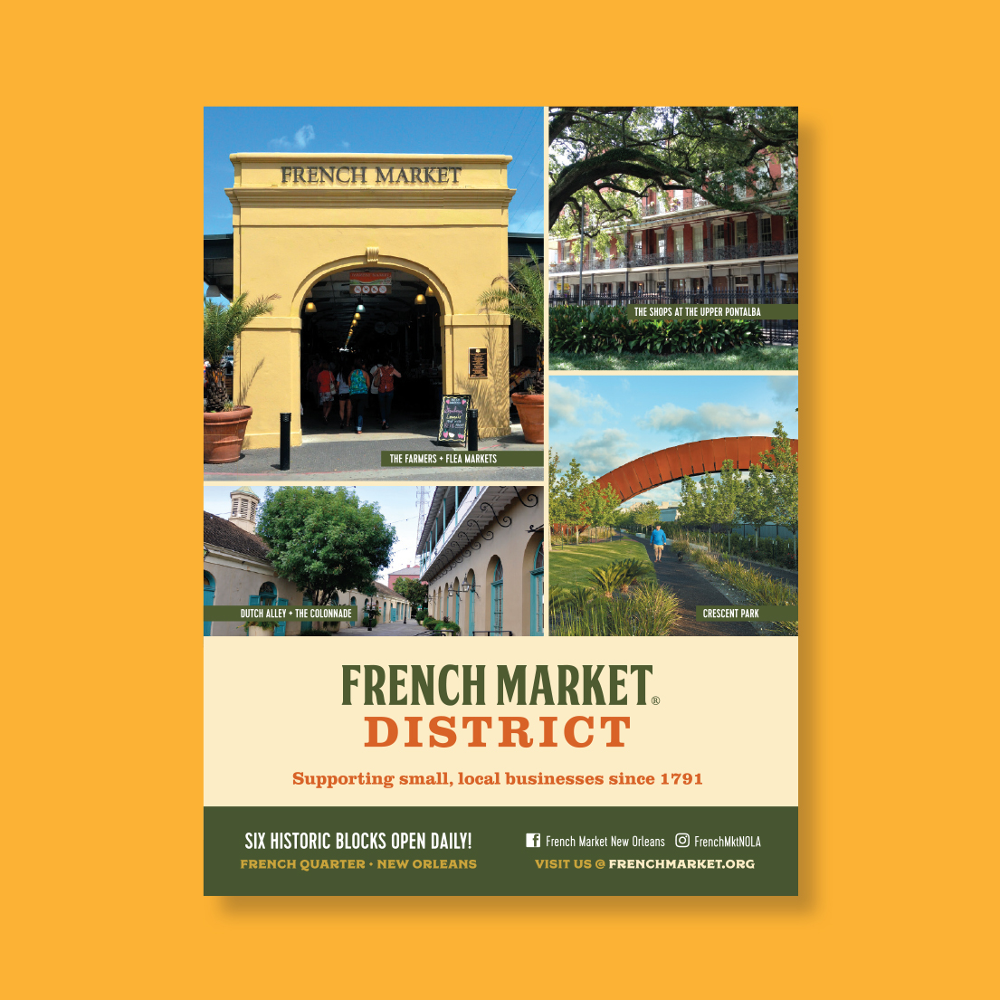
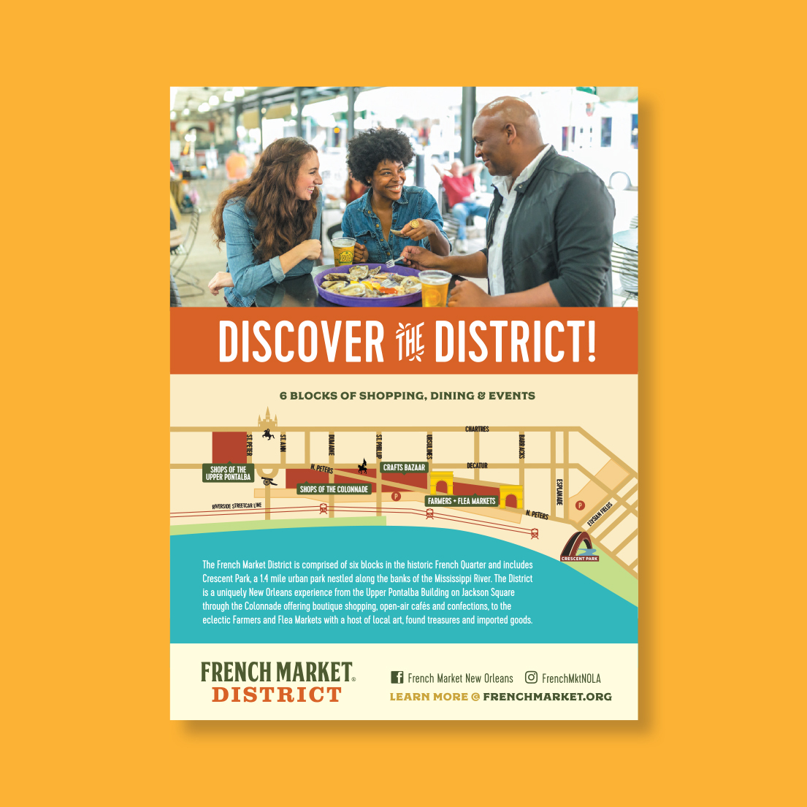
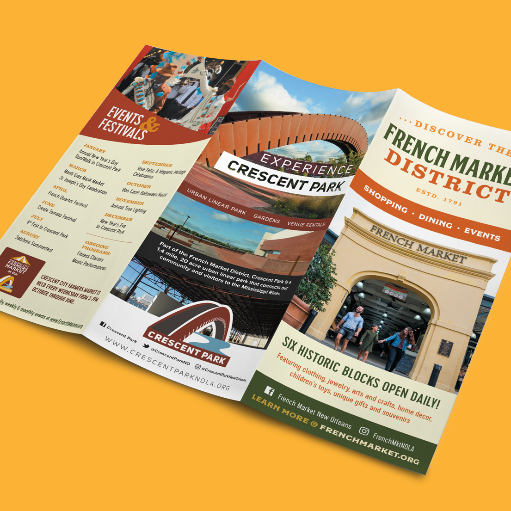
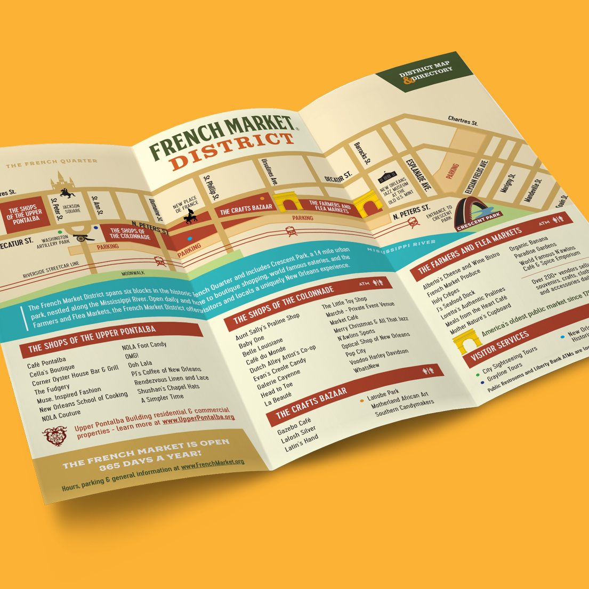
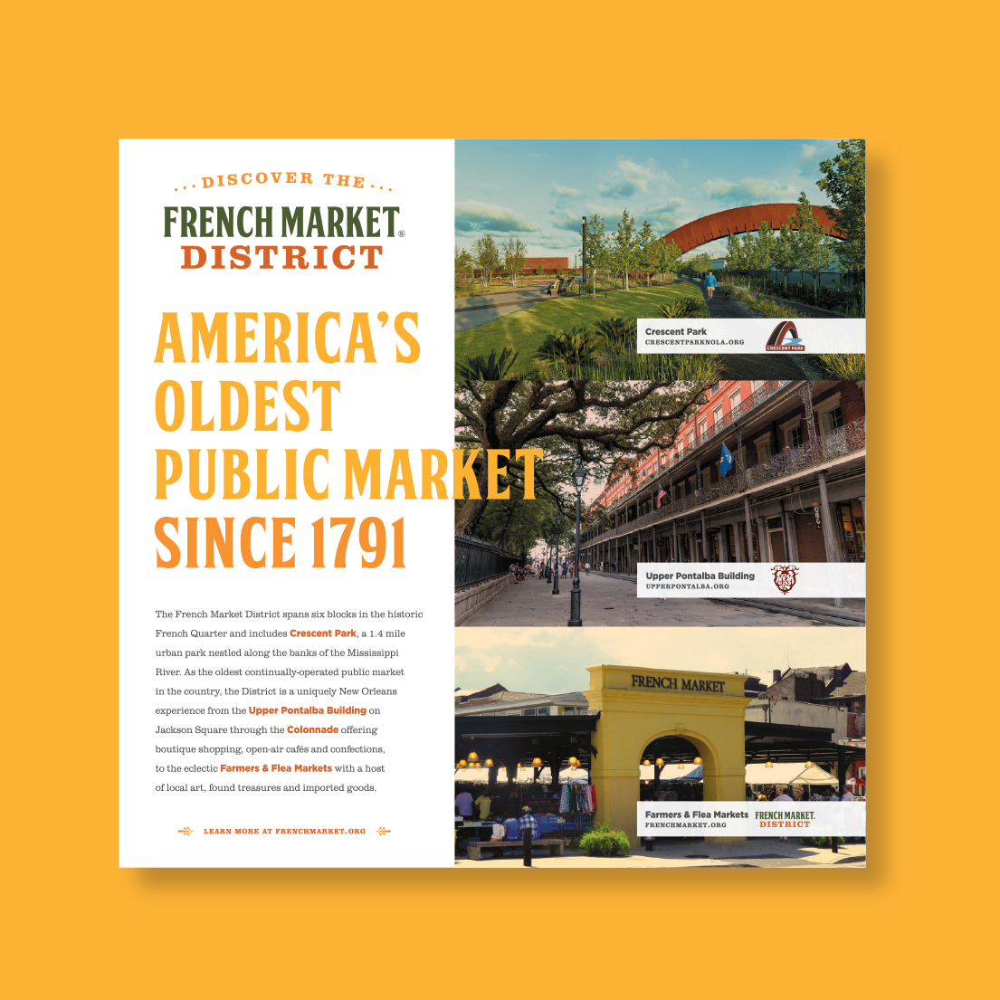
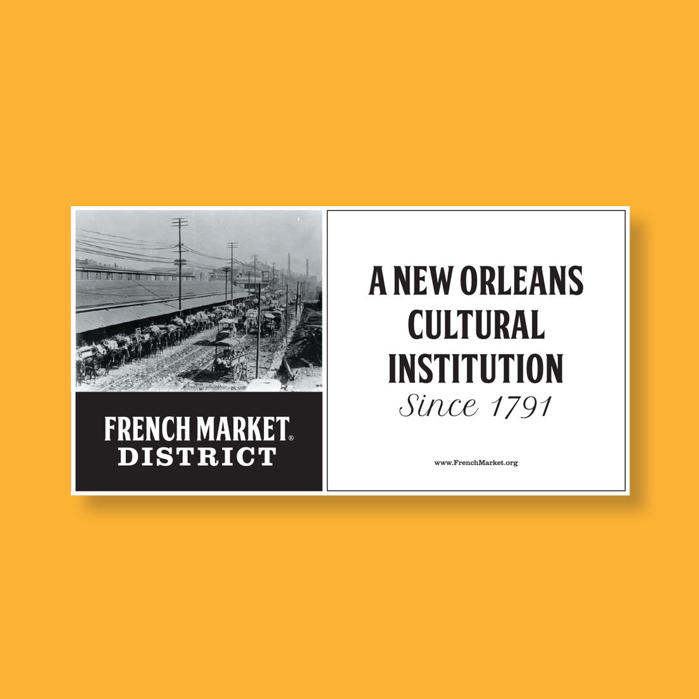
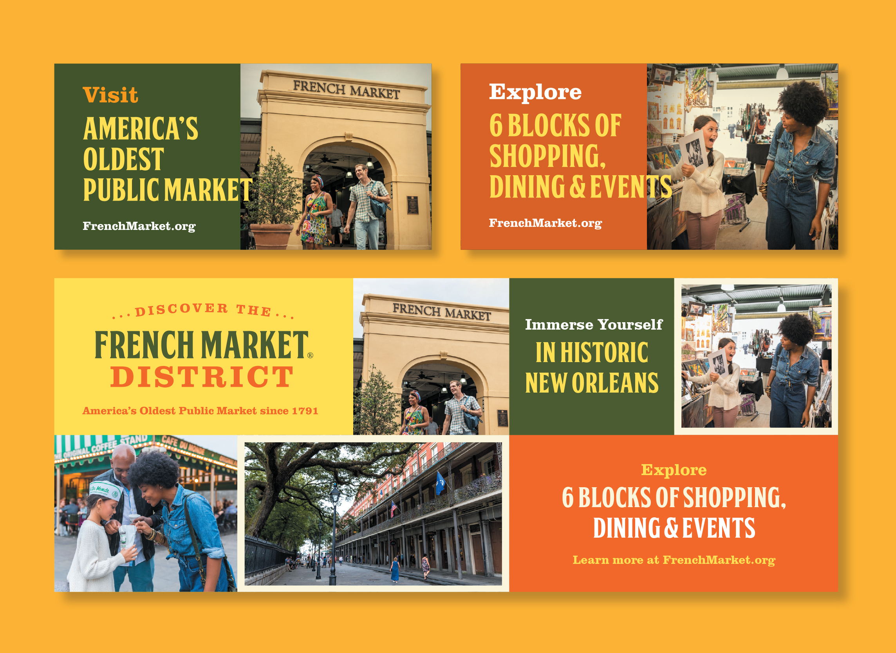
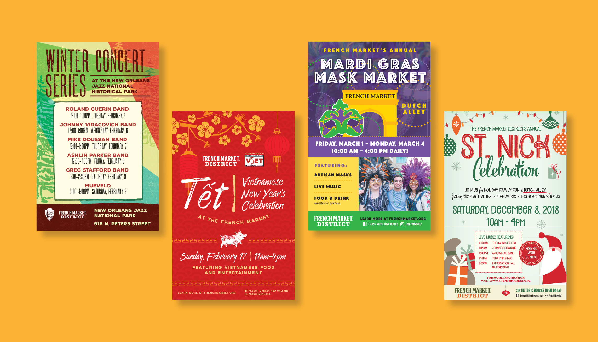

The French Market District is a cultural destination located in the heart of the famous New Orleans French Quarter. It spans over six blocks and contains a multitude of boutique shops and cafés, historic landmarks, an urban linear park, and an open-air public market that's home to a daily farmers & flea market. It's known as "America's oldest public market" operating continuously since 1791. The District also hosts a wide array of events, programs, and annual festivals that celebrates & honors New Orleans' food, music, art, and local cultures.

- Client
- French Market Corporation
- Agency
- Deep Fried Advertising
- Years Active
- 2012-2020
- Role
- Lead Design
- Work
- Print/Digital Advertising, Out-of Home, Posters, Brochures, Event Graphics, and Environmental Signage



I have worked with The French Market District continuously since 2012. Over the years, I've created a vast amount of advertisments, promotional materials, out-of-home signage, and event graphics including their largest event, the annual Creole Tomato Festival. The District is rooted in tradition yet it constantly reinvents itself with new offerings to attract visitors daily. The brand represents both a historic and modern feel by pairing a warm color palette with bright photography & bold typography.





In addition to advertising for the District itself, I've also created graphics for their various seasonal and cultural events. Each event is given a unique "mini-brand" that is repeated each year.
